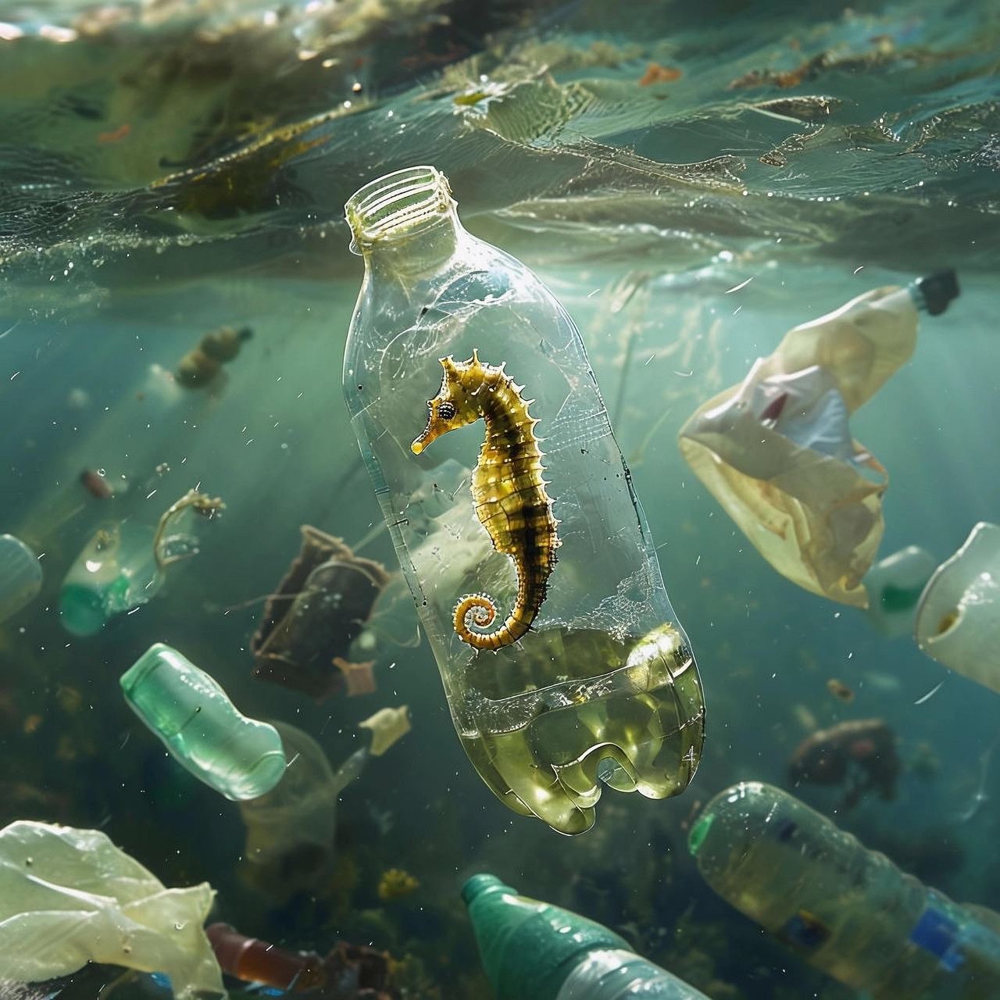

About this site

Seahorse in the Bottle by Pixabay.
Marine animals like sea turtles, whales, and seabirds often mistake plastic for food, leading to injuries or death. Coral reefs—the “rainforests of the sea”—are also being smothered by plastic waste that blocks sunlight and spreads disease. Around the world, volunteers and scientists are working together to rescue wildlife and restore the ocean’s balance, but they need our help to keep the waves alive.